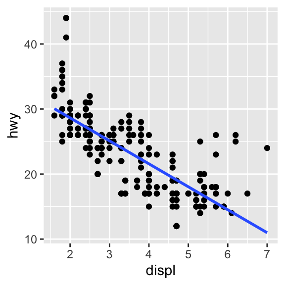

Guía 3: Análisis exploratorio de datos y visualización
Laboratorio de datos 2023 (comisión: G. Solovey)
1 Visualización
1.1 ¿Qué tipo de gráfico usarían para contribuir a responder las preguntas planteadas en cada una de estas situaciones? Los tipos posibles son: histograma, bar plot, box plot, scatter plot y line plot.
En una encuesta, se pregunta por el máximo nivel educativo alcanzado por las personas (codificado por la variable “edu” que puede ser: “primario”, “secundario”, “universitario”). En el dataset, cada fila corresponde a un individuo y la columna de interés, “edu”. Se quiere entender la proporción de personas de cada nivel educativo que respondieron la encuesta.
Un pediatra registra la altura de un bebe desde su nacimiento hasta cumplir un año y quiere graficar la evolución de la altura a lo largo de ese lapso.
Un laboratorio de física midió en 1879 la velocidad de la luz 100 veces. No les da siempre igual por diversos motivos (errores de medición). Quieren ver cómo se distribuyen las mediciones.
Las 100 mediciones del punto anterior corresponden a 5 experimentos de 20 mediciones cada uno. Ahora quieren visualizar variables de resumen de las mediciones desagregadas por experimento.
A un grupo de 43 personas de Argentina se les preguntó quién creen que fue mejor jugador, Maradona o Messi. 20 respondieron que fue Maradona y 23 que fue Messi. Estos datos están volcados en un dataframe de dos columnas (“mejor” y “n”) por dos filas. Se quiere describir visualmente cuántas personas eligieron a cada jugador.
Para investigar la relación entre las horas de sueño de una persona y el consumo de cafeína, se cuenta con un conjunto de datos que consta de respuestas de 100 personas a las siguientes preguntas: ¿cuántas horas duerme por la noche en promedio? ¿cuántos cafés toma por día en promedio?
1.2 Poner en práctica las respuestas anteriores utilizando los siguientes datos. Es decir, crear un gráfico usando ggplot2. Piensen qué geom usarían en cada caso.
# datos simulados del maximo nivel educativo de 100 personas
data.edu <- data.frame(id = 1:100,
edu = sample(x = c("primario","secundario","universitario"),
size = 100,
replace = T,
prob = c(0.1, 0.5, 0.4)))
# datos de la preferencia por Maradona-Messi de 43 personas hipotéticas:
data.futbol <- data.frame(mejor = c("maradona", "messi"),
n = c(20, 23))
# datos de altura y mes de vida de un bebé.
data.alturas <- data.frame(mes = c(0, 1, 2, 3, 4, 5, 6, 7, 8, 9, 10, 11, 12),
altura = c(50, 55, 57, 61, 62, 63, 64, 66, 68, 69, 71, 73, 75))
# los datos del experimento que mide la velocidad de la luz estan en el data frame
# "morley" que viene en R. ¿qué columnas tiene?
data.luz <- morley
# datos de horas de sueño y consumo de café
cafe = runif(100, min = 0, max = 3)
dormir = rnorm(100, mean = 8) - cafe
data.cafe <- data.frame(cafe, dormir) 1.3 Instalar el paquete “datos”. Abrir el data frame millas (View(millas)). Averiguar qué significan las variables corriendo ?millas en la consola. Hacer un gráfico del consumo en autopista en función de la cilindrada de los autos en el que cada observación (auto) está graficada con un triángulo rosa (Ayuda: buscar acá las especificaciones de ggplot2).
1.4 ¿Por qué el siguiente código no resulta en un gráfico con puntos azules? Corregirlo para que funcione.
ggplot(millas) +
geom_point(aes(x = cilindrada, y = autopista, color = "blue"))1.5 ¿Qué pasa si uno mapea una “aesthetic()” a algo que no es una variable? Por ejemplo:
ggplot(millas, aes(x=cilindrada, y=autopista, fill = cilindrada < 5)) +
geom_point(shape = 24, size = 4) + theme_classic()1.6 Reproducir el siguiente grafico y agregarle título, subtítulo, caption. Cambiarle el label del eje x y del eje y.
1.7 Hacer un histograma del consumo de los autos en ciudad y otro del consumo en autopista.
1.8 Hacer un boxplot del consumo discriminado por tracción. Es decir, 3 boxplots. ¿Cuál es la tracción que menos consume?
1.9 Reproducir los siguientes gráficos (notar que la variable categórica que se usa para graficar es traccion).


1.10 ¿Por qué aparecen celdas vacías en este gráfico “facetado”?
ggplot(millas, aes(x = cilindrada, y = autopista)) +
geom_point() +
theme_bw() +
facet_grid(traccion~cilindros)1.11 Leer ?facet_wrap. ¿Qué hacen los argumentos nrow y ncol? Explorar qué otras opciones existen para el controlar el aspecto del “facetado”? ¿Por qué facet_grid() no tiene como argumentos a nrow y ncol?
1.12 Considerar el siguiente código para generar un gráfico “faceteado”:
ggplot(millas, aes(x = cilindrada, y = autopista)) +
geom_point() +
theme_bw() +
facet_wrap(~clase, nrow = 2)Graficar la misma información pero mapeando la
claseen el color.¿Qué ventajas y desventajas tiene el “faceteado” frente al aesthetic de color? ¿En qué circunstancias usarían una forma o la otra?
1.13 Comparar estas dos formas de entender la relación entre el tamaño del motor (cilindrada) y la tracción del auto. ¿Qué hace el . y qué diferencia hay entre facet_grid(traccion ~ .) y facet_grid(. ~ traccion )? ¿Cuál de las dos formas facilita la comparación? ¿Qué les dice esto respecto de cuándo usar un faceteado sobre filas y sobre columnas?
ggplot(millas, aes(x = cilindrada)) +
geom_histogram() +
facet_grid(traccion ~ .) +
theme_bw()
ggplot(millas, aes(x = cilindrada)) +
geom_histogram() +
facet_grid(. ~ traccion) +
theme_bw()2. Análisis exploratorio
2.1 Usando distintas estrategia de visualización, usar el dataset de pinguinos para explorar cuáles parecen ser las variables más importantes para predecir la masa corporal de los pinguinos. Reportar los gráficos que lo guian hacia esa conclusión.
Referencias
- Recomendamos esta clase de visualización de datos con
ggplot2de la Dra. Lucía Babino del Instituto de Cálculo. - Cap. 10-11 de R for Data Science (2e). Hadley Wickham, Mine Çetinkaya-Rundel, and Garrett Grolemund.
- Cap. 4 de Data Science. A First Introduction. Tiffany Timbers, Trevor Campbell, and Melissa Lee.